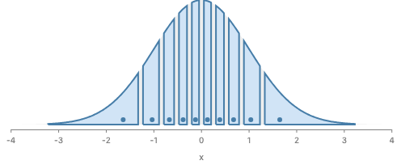
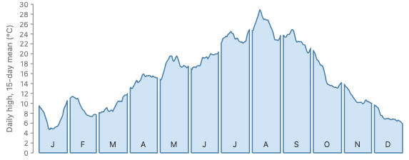
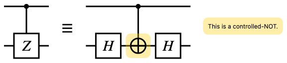
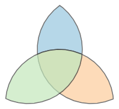

CSS
visibility: hidden;
laid out: yespainted: nohit-testable: nomodel
The box keeps its place and size. It is not painted and lets the pointer through.
An API proposal for GoFish issue #1267: a shape that other parts of
the picture use, but that the reader does not see. It replaces the
unseen fill: "none" curve in the croissant charts. Round
3, first below, records Josh's answers to round 2 and takes up his
open questions. Rounds 2 and 1 follow.
blank() is laid out,
carries data, counts for scales, can be referred to, and draws
nothing. Today only rectangles get it.
.hidden(), like
.name() and .zOrder(). A hidden mark is
laid out and counts for scales, axes and legends. It paints
nothing and cannot be hovered.
Recommendation: approach A,
mark.hidden(), with blank(opts) defined as
rect(opts).hidden(). Runner-up: the same meaning as a
wrapper, hide(mark).
// Before: drawn, but unseen
chart(grid)
.flow(scatter({ x: "x" }))
.mark(ribbon({ h: "pdf", fill: "none" }).name("density"));
// After: defined, not drawn
chart(grid)
.flow(scatter({ x: "x" }))
.mark(ribbon({ h: "pdf" }).name("density").hidden());Josh answered round 2. His decisions are recorded first, then his four open questions. Rounds 2 and 1 follow, with notes where these decisions change them.
.hidden(). It reads an operand for shape,
place or data and never draws it, so not drawing an operand is not
hiding it. No operator ever sets .hidden().
intersect switches its slots between child and
operand with its paint option, mask reads its stencil
as ink, and paint uses one slot as both. The proposed
fix is a divergence for Josh: region shapes whose slots are all
operands, and one clip({ to }, children). It also
covers #1209 (clipping to a box).
use(ref) is parked. Under the rule,
round 2's one example no longer needs it.
bend({ along: spine }, [shape]), not a
coordinate transform. The spine is an operand, and you see it by
drawing it as a child.
.translate() and position() build the
same node
but go on the wire in two forms. Rename position to
translate. cut takes its source first;
move it to cut(opts, [source]). Both issues are
drafted.
.hidden() only. There is no hide(x).
.hidden() wins over a descendant's
.hidden(false).
.hidden() takes an optional boolean or a function of
the datum, .hidden(fn), in the first version.
Conditional hiding comes with it.
.hidden() cannot be called through a ref or a
selection.
.hidden() of anything it
holds. Otherwise whether a mark is drawn would depend on the program
around it. Only the user sets it, on a value they hold.
cut's argument order to
op(opts, children), and fix the name mismatch between
.translate() and position() if they are
the same thing.
Josh likes the cases where a mark is passed as an argument and so is not promised to be drawn, and wants a direct child to be drawn. Here is that rule, stated in terms of what the code does.
.hidden() on an operand changes nothing.
// Children: drawn by the operator as themselves.
layer([a, b]);
spread({ dir: "x" }, [a, b]);
enclose({ padding: 4 }, [a, b]); // its outline, plus a and b
// Operands: read for shape, place or data. The operator draws something
// new, or nothing.
intersect({ fill: FILL }, [density, region({ inset: 3 })]); // one new shape
Constraint.align({ x: "middle" }, [slot, content]); // draws nothing
cut({ dir: "y", size }, [image({ href, w: 193, h: 600 })]); // copies
// A ref draws nothing wherever it goes. It points at a shape that is
// drawn, or hidden, where it was made.
arrow({}, [ref("a"), ref("b")]); // draws the arrow onlyHow you choose. To see a guide, draw it once as a child and pass a ref as the operand. Not to see it, either pass it inline as the operand, or, when it must still be laid out among other children, make it a hidden child. The croissant curve is the second kind: it has to set the y scale and sit in the chart's frame, so it is a hidden child read through a ref.
// See the guide: draw it once as a child, and read it as an operand.
layer([
chart(grid)
.flow(scatter({ x: "x" }))
.mark(ribbon({ h: "pdf" }).name("density")),
]).relate(({ density }) => [
chart(grid)
.flow(slices)
.mark(intersect({ fill: FILL }, [density, region({ inset: 3 })])),
]);
// Do not see it, but it must still be laid out in the chart's frame:
// a hidden child.
ribbon({ h: "pdf" }).name("density").hidden();
// Do not see it, and it needs no place of its own: pass it inline.
intersect({ fill: FILL }, [circle({ r: 40 }), region({ inset: 3 })]);| Operator | Slot | Kind | What the operator draws | Code |
|---|---|---|---|---|
layer, spread, stack,
scatter, group,
partition, treemap,
pack
|
children | child | each child as itself, placed |
layer.tsx, spread.tsx,
stack.tsx, ...
|
frame, position and
.translate, offset,
coord
|
the child or children | child | the child, moved or warped |
frame.tsx, positionNode.tsx,
offset.tsx,
coordinateTransforms/coord.tsx
|
enclose |
children | child | its outline, then each child |
enclose.tsx (lowerChildrenOffset)
|
enclose with
Shape.blob({ avoiding })
|
avoiding |
operand | nothing for these | families/shape.ts |
arrow |
two children, usually refs | child | the arrow, then the children (a ref draws nothing) | arrow.tsx |
line, ribbon and other relational
marks in .layer() or .relate()
|
the selectAll or refs they connect |
operand | a new path through them | connect.tsx |
Constraint.* in .relate() |
refs | operand | nothing | constraints/ |
cut(source, opts) and .cut(opts)
|
the source | operand | N clipped copies of the source; the source itself is never placed | cut.tsx (buildSliceNode) |
intersect with fill or
stroke
|
both | operand | one new shape in its own paint |
porterDuff.tsx (placedOutlines)
|
intersect without paint |
both | child | both operands' own paint, blended, inside the overlap | porterDuff.tsx |
subtract, exclude |
both | child | the operands' own paint inside the region; no paint option | porterDuff.tsx |
paint([A, B]) |
A, B | A child and operand; B child | A, then B clipped to A | porterDuff.tsx |
mask([A, B]) |
A, B | A operand, read as ink; B child | B clipped to A's ink | porterDuff.tsx |
ref(...) |
none | pointer | nothing | shapes/ref.tsx |
Bin.voronoi({ seeds }) |
seeds |
data | nothing | families/bin.ts |
Most operators fit the rule. The region-compositing family does not, in three ways.
1. intersect's slots change kind with a paint
option.
Without paint, it draws both operands' own paint, so they act as
children, and hiding one empties the result. With paint, they are
operands and their paint is not drawn. Real renders, left to right:
the two inputs, intersect without paint, the same with
the circle hidden (the story shim), and intersect with
paint.
layer

intersect([circle, square])


intersect({ fill, stroke }, [circle, square])

2. mask reads its stencil as ink, not as a
shape.
The stencil's fill sets how much of B shows (round 2's faded
stripes), and a ref stencil, which has no ink, lets nothing through.
A painted intersect reads a ref's shape fine; that is
how the croissant works. Real render: a circle drawn once as an
outline and passed to mask through a ref. The outline
draws; the stripes do not.
mask([ref(disc), stripes]): nothing inside


3. paint uses one slot as both. A is
drawn as a child and also read as B's clip.
These are one fault: one family of operators does two different
jobs. One job makes a new shape from operand shapes, like Figma's
boolean operations. The other draws children inside a region, like
SVG clipPath, CSS clip-path, TikZ
\clip and Vega's clip. #1209 (clipping
content to a box) is the second job, and #1230 (the default paint of
a compositing operator with no fill) exists because the first job
has no paint of its own.
Proposed factoring (a divergence from the current operators). Region shapes take operands only and draw one new shape. Clipping takes one operand region and draws its children.
// Sketch. Region shapes: every slot is an operand, read for shape only.
intersect({ fill: FILL, stroke: STROKE }, [a, b]);
subtract({ fill: FILL }, [a, b]);
exclude({ fill: FILL }, [a, b]);
union({ stroke: STROKE }, [a, b]); // one outline, not two
// Clipping: the region is an operand, the children are children.
clip({ to: a }, [b]); // was mask([a, b])
layer([a.name("a")]).relate(({ a }) => [clip({ to: a }, [b])]); // was paint([a, b])
clip({ to: rect({ w, h }) }, [bars]); // a plot-box clip (#1209)intersect, subtract,
exclude and a new union is an operand,
read for its shape only. Hidden or not, inline or a ref, it gives
the same shape. The result's default paint is #1230's question.
union is not layer: a stroked union has
one outline around both shapes, while a layer strokes each one.
clip({ to }, children) replaces mask and
paint. to is an operand read for its
shape, never its ink, so a ref works and its fill does not matter.
The children are children.
cut's slices become
clip({ to: sliceRect }, [offset(source)]), which is
what mask([sliceRect, offset(source)]) does today.
intersect without paint, the blended form, goes away.
The same picture is clip({ to: a }, [b]), or two
clips.
// Today. mask's stencil is read as ink, so a ref stencil gives nothing,
// and the outline needs a second circle.
layer([
mask([circle({ cx: 100, cy: 100, r: 80, fill: "white" }), stripes()]),
circle({ cx: 100, cy: 100, r: 80, fill: "none", stroke: "#222" }),
]);// Sketch. clip reads its region for shape only. The circle is drawn
// once, as itself, and read through a ref.
layer([
circle({ cx: 100, cy: 100, r: 80, fill: "none", stroke: "#222" }).name(
"disc",
),
]).relate(({ disc }) => [clip({ to: disc }, [stripes()])]);The proposed picture is the round 2 render above: the same stripes inside a disc, with its outline on top. The circle is drawn once, so there is no second layout and nothing to keep in sync.
use(ref) was, and why it is parked
In SVG, <use href="#a"> draws element
a again. It makes no new shape; it repeats one that
exists, and it may give the copy its own fill or stroke.
use(ref("a"), paint) would have been the same in
GoFish: draw a placed shape a second time in another style, without
laying it out again.
There are three ways to make a shape seen, and use is
only for the third. Un-hiding draws the shape once, at its own place
in paint order, in its own style. A second mark over the same data
draws a second shape, and it lands in the same spot when the shape
comes from data, like a ribbon over rows. use is for a
shape that must be painted twice, in two styles or at two depths,
when its shape comes from layout rather than data, so a second mark
might land somewhere else.
Round 2's one example was the clip outline. Under the children and
operands rule it does not need use: the circle is drawn
once as a child, as an outline, and the clip reads it through a ref
(the sketch above). The case that would need use looks
like this, a blob drawn as a fill below its members and as an
outline above them:
// Sketch, parked. A blob laid out around its members, drawn twice:
// a fill below the members and an outline above them.
layer([
enclose({ shape: Shape.blob, fill: "#eef3f8" }, members).name("group"),
use(ref("group"), { fill: "none", stroke: "#467DA8", zOrder: 1 }),
]);No story in the corpus does this. Verdict: parked, and taken out of the recommendation. It comes back as its own issue if a real example needs a layout-built shape painted at two depths.
The issue is #75. Its title is "rendering IR", but its body asks for generic warping of rects, paths, images and text, so that the warp is not written again for each mark. It links two warp.js threads. Josh's comment adds that arrows have a natural one-dimensional spine reading, and a two-dimensional one where the arrow is warped like an image.
warpjs#15, bend path. A path is bent along another
path, its skeleton, the way Inkscape's Bend live path effect does
it. The picture below is from that thread: a gecko, the gecko with a
straight green spine, and the gecko bent along a curved spine. J.F.
Barraud's theory, quoted from Inkscape's
lpe-bendpath.cpp, is short: reparametrize the skeleton
by arc length as U(s), take its unit normal N(s), and map each point
(x, y) of the shape to U(x) + y·N(x). You go x along the spine, then
y along its normal.
warpjs#11, envelope. A word is fitted into an arbitrary closed shape, as Illustrator's Envelope Distort does. The thread finds that Illustrator builds a mesh over the shape's box and deforms it, and points to generalized barycentric and mean value coordinates for the math.
The recorded decision.
notes/design/polar-coordinate-spaces.md, in "Bend /
skeleton warp: explicitly deferred (maybe never)", calls this a
separate capability that deforms a shape so its centerline follows a
target path, "independent of the ambient coordinate space". It is
out of scope for GoTree, and the note says that even GoTree's
arc-length midpoint case is a plain coordinate transform. This round
respects that: it says what the operator would look like so the idea
has a correct home, and it does not schedule it.

Image: github.com/benjamminf/warpjs/issues/15, posted by the issue's author to show Inkscape's Bend live path effect. Not drawn by GoFish.
| Tool | Bend (one spine) | Envelope (a region) |
|---|---|---|
| Inkscape | Bend and Pattern Along Path live path effects: one path follows a skeleton path, stretched or repeated | Envelope Deformation: four bend paths, top, right, bottom and left |
| Illustrator | Art brush: artwork stretched along a stroke | Envelope Distort: make with warp presets, with a mesh, or with a top object as the envelope |
| Figma | None built in; plugins add it | None built in; plugins add it |
| warp.js | Asked in #15; not built in | A proof of concept in #11, polygons only |
| GoFish today |
None. Coord.wavy is a fixed formula over the
whole frame
|
None |
Coordinate transform or operator? An operator. Barraud's map is a map of the plane, so it could look like a coordinate transform. Three things say it is not one in GoFish.
coord is a frame:
its children are laid out in its coordinates, with its scales and
axes. A bend takes one shape that is already laid out in ordinary
pixels and maps that shape's own box onto a spine. Every tool above
applies it to one object, and the deferred note calls it independent
of the ambient coordinate space.
Coord.* strategy is a fixed function that
needs nothing from the scene.
coord uses to draw a
path through a mapping (adaptive sampling, from #121).
So bend and envelope are operators with one child and an operand:
bend({ along: spine }, [shape]) and
envelope({ top, bottom }, [shape]). Round 3's first
sketch, chart(towns, { coord: Coord.along(river) }), is
withdrawn. If one operator is wanted, the two are one idea, "map the
child's box onto a guide", and could be
warp({ to: Warp.along(spine) }, [shape]) with a
Warp family.
Children and operands. The shape is the child: the operator draws it as itself, bent. The spine and the envelope's sides are operands, read for their shape only, and never drawn by the operator. The user decides whether the guide shows, where the guide is made. In the gecko picture the green spine is drawn, so it is a child of the layer, read through a ref. In a usual output the spine is not drawn, so it is a hidden child (it still needs its place in the frame) or an inline operand.
// Sketch: bend does not exist. The gecko is the child; it is drawn,
// bent. The spine is an operand, read for its shape. Here it is also
// drawn, once, as a child of the layer, as in the warpjs#15 picture.
layer([
chart(spinePoints)
.flow(scatter({ x: "x", y: "y" }))
.mark(line({ curve: Curve.natural, stroke: "green" }))
.name("spine"),
]).relate(({ spine }) => [
bend({ along: spine }, [
polygon({ points: gecko, fill: "none", stroke: "black" }),
]),
]);// The usual output: the spine is not drawn. It is still laid out in the
// layer's frame, so it is a hidden child.
chart(spinePoints)
.flow(scatter({ x: "x", y: "y" }))
.mark(line({ curve: Curve.natural }))
.name("spine")
.hidden();
Arrows. Josh's two readings are two different
operations. In the one-dimensional reading the spine is the arrow's
route: the arrow draws a new path along it and puts its head at the
end, and nothing is warped. That is an along option on
arrow, with the route as an operand. In the
two-dimensional reading a straight, wide arrow shape is bent like
the gecko.
// Sketch. 1D: the spine is the arrow's own route. The arrow draws a new
// path along it, with a head at the end; nothing is bent.
layer([a.name("a"), b.name("b"), route.name("route").hidden()]).relate(
({ a, b, route }) => [arrow({ along: route }, [a, b])],
);// Sketch. 2D: a straight, wide arrow shape, bent like the gecko.
bend({ along: spine }, [polygon({ points: fatArrow, fill: "#467DA8" })]);Envelope. The child's box is mapped into the region between two curves. Both curves are operands, and each is drawn or hidden on its own where it is made.
// Sketch. Envelope: the child's box is mapped into the region between
// two curves (Inkscape uses four sides; two is the common case).
layer([upper.name("upper").hidden(), lower.name("lower").hidden()]).relate(
({ upper, lower }) => [
envelope({ top: upper, bottom: lower }, [
text({ text: "WORD", fontSize: 96 }),
]),
],
);
The refs here sit inside .relate(). Outside it, they
wait on #1259 (string refs outside .relate()). The
draft issue for this capability is
proposals/shape-definitions/issue-spine-envelope.md.
cut, and .translate() with
position()
.translate() and position().translate(opts) is
attached to every mark and operator in
attachModifiers
(ast/marks/createOperator.ts), and
translateMark wraps the mark's node in
positionNode(opts, [node]).
position(opts, children)
(graphicalOperators/position.tsx) calls the same
positionNode (positionNode.tsx). The node
has type "position" and throws unless it has exactly
one child.
position's docs say "Set a single child's
min-corner".
.translate is a
translate: { x, y } field on the mark (MARK_BASE_FIELDS
in gofish-ir/src/frontend/descriptors.ts,
TranslateIR in schema.ts, numbers only),
and fromJSON.ts reapplies it by calling
.translate. position is its own combinator
node whose x and y take a datum. One fact
has two IR homes, and the field cannot carry the datum offset that
JS allows.
offset(opts, [child]) (offset.tsx) moves
only the paint and keeps the reported box.
Constraint.position places a child elsewhere in a
layer. Neither is the same thing, and neither changes here.
// Today: one node, two names, two forms on the wire.
rect({ w: 20, h: 20 }).translate({ x: 10 }); // field: translate: { x: 10 }
position({ x: 10 }, [rect({ w: 20, h: 20 })]); // node: { type: "position" }// Proposed: one operator and its method twin, one node on the wire.
translate({ x: 10 }, [rect({ w: 20, h: 20 })]);
rect({ w: 20, h: 20 }).translate({ x: 10 }); // the same noderect(w=20, h=20).translate(x=10)
position([rect(w=20, h=20)], x=10)translate([rect(w=20, h=20)], x=10)
rect(w=20, h=20).translate(x=10) # the same node
The fix. Rename position to
translate, keep .translate() as its method
twin, and put one translate node on the wire. The
translate field leaves the mark base fields.
Callsites: position(...) appears about
12 times in 4 story files (EncloseShapes, EncloseMembers,
OffsetRegressions, Topology), about as often in their 4 Python
ports, 12 times in the JS and Python API pages (shape.md
and position.md in each language), and 13 times in 2
internals diagrams. The API page
operators/position.md is renamed in both languages.
.translate(...) calls stay as written.
cutcut(source, opts) (cut.tsx, line 196) is a
plain function that returns a list of N slice promises, N being
size.length. Each slice is
mask([sliceRect, offset(source)]), so the source is
copied N times and never placed itself.
.cut(opts) (attachCut, on
rect and image) builds a different thing:
an expand mark from createMark, whose
size may be a field name or left out (equal slices, N
from the rows). cutMark(opts) builds the same expand
mark for the deserializer and is exported too.
// Today: the source comes first, and the method builds another thing.
stack({ dir: "y" }, cut(image({ href, w: 193, h: 600 }), { dir: "y", size }));
chart(rows)
.flow(stack({ dir: "y" }))
.mark(image({ href, w: 193, h: 600 }).cut({ dir: "y", size: "amount" }));// Proposed: options first, the source as the one child.
stack({ dir: "y" }, cut({ dir: "y", size }, [image({ href, w: 193, h: 600 })]));
chart(rows)
.flow(stack({ dir: "y" }))
.mark(image({ href, w: 193, h: 600 }).cut({ dir: "y", size: "amount" }));stack([cut(image(href=href, w=193, h=600), dir="y", size=size)], dir="y")stack([cut([image(href=href, w=193, h=600)], dir="y", size=size)], dir="y")
The fix, step 1:
cut(opts, [source]) in JS and
cut([source], dir=..., size=...) in Python.
Callsites: 3 in Cut.stories.tsx, 3 in
test_cut.py, 9 in the JS cut.md and 8 in
the Python cut.md (counting the signature lines), and 2
in internals/core/underlying-space.md. The
.cut(...) calls (7 in stories, 7 in Python ports, 2 in
tests) stay. Step 2, a question: make
cut(opts, [source]) build the same expand mark as
.cut(opts), so that the method is a true twin and
cutMark leaves the public surface. That needs a check
that combinators take an expand mark's N nodes in place, as
fromJSON.ts already does for a cut child.
Which PR. Both renames are breaking spelling
changes under the same rule, with no tie to .hidden().
I recommend one PR for the two, apart from the
.hidden() PR. Drafts:
proposals/shape-definitions/issue-translate-position.md
and proposals/shape-definitions/issue-cut.md.
intersect without paint renders a blend
(a desaturated copy of one operand under the other's color), not two
paints side by side. The table describes what it draws today.
clip and union are new names.
They need the precedent check before the spelling is settled.
.hidden() on an inline operand changes
nothing.
Whether that should warn is a decision below.
cut fix is unverified: I
have not checked that every combinator accepts an expand mark's list
of nodes.
What round 3 changes in rounds 2 and 1. Round 2's
"an operator decides what is drawn only for its own children"
becomes the children and operands rule: an operator draws its
children as themselves, never draws its operands, and never sets
.hidden(). Round 2's spine option (ii) and its
use(ref) are dropped. Round 1's "region operand" term
now means an operand slot of a region shape.
clip({ to }, children), replacing mask and
paint?
clip the name, and is to the option?
union as a region shape, apart from
layer?
.hidden() on an inline operand warn, since it
does nothing?
use(ref) until a real example needs it?issue-spine-envelope.md) so the capability stops
sitting under #75's "rendering IR" title, while keeping it deferred
as the note records? And is it two operators, bend and
envelope, or one warp with a
Warp family?
position to translate and move
cut to cut(opts, [source]) in one PR,
apart from .hidden()?
cut, also make the function and the method one
construct (step 2)?
Josh asked three things after round 1: how chain methods relate to
operators, how a shape works as a mask or guide that is sometimes
drawn, and what happens when .hidden() is called on
something already built. Round 1 follows below, unchanged except where
noted.
x.m(o) builds the same node as
m(o, [x]). A method that sets a fact on the mark's
own nodes (.name, .zOrder,
.transition) or reads the world around the mark
(.label, .relate) has no twin.
.hidden() is the second kind. It
makes no node. It sets one fact on the nodes it is called on, the
same fact blank() sets. So it is a method only,
.hidden() in JS and Python, and there is no
hide(x).
.hidden(). An operator decides what is drawn only for
its own children, as mask and a painted
intersect already do. It never hides a shape it reads
through a ref. Voronoi seeds are rows, not shapes, so
they need neither.
.hidden(fn) hides per datum without moving layout. A
ref or selectAll cannot hide what it
reads.
Recommendation. .hidden() only, as a
method on marks, charts and layers, in JS and Python, with an
optional per-datum argument. Runner-up: both spellings, with
hide(x) defined as x.hidden() so that both
write the same field.
| System | Method form | Wrapper form | How the two relate | Hiding |
|---|---|---|---|---|
| SwiftUI |
.padding(), .hidden(),
.environment(k, v), .id(x),
.tag(x)
|
.modifier(M) gives
ModifiedContent<View, M>
|
Every modifier method is a wrapper value. What it does varies:
some lay out (.padding), some write settings down
to the subtree (.environment,
.font), some send values up to ancestors
(.preference), some only tag the view for a
parent or for accessibility (.id,
.tag, .accessibilityLabel). The
spelling is the same for all of them.
|
.hidden() keeps the view's layout and draws
nothing. There is no wrapper spelling.
|
| Jetpack Compose |
Modifier.padding().alpha(0f), passed as the
modifier argument
|
Layout composables such as Box { } |
The guidance: a modifier decorates one element, a composable
arranges children. A modifier chain is a list of nodes
attached to one layout node.
Modifier.layoutId(x) is a tag the parent layout
reads.
|
Modifier.alpha(0f) keeps layout and still takes
input. Not calling the composable removes it.
|
| Flutter | None in the core library. Packages add extension methods. |
Opacity, Visibility,
Offstage
|
Everything is a wrapper widget. |
Visibility has flags for what to keep:
maintainSize, maintainState,
maintainInteractivity. Offstage lays
out but takes no space.
|
| Typst | Methods on values (.len()), not on content |
hide(body) |
Content changes are functions, plus set and
show rules.
|
hide keeps layout and draws nothing. |
| CSS | Properties on the element | Wrapper elements | A property is a fact about one element; a wrapper adds a box. |
visibility: hidden keeps layout and is inherited,
and a child can set visible again.
display: none removes the box.
|
| Lean 4 | x.f a |
T.f x a |
One function. x.f looks up f in the
namespace of x's type and passes
x as the first argument of that type. No choice
per function.
|
— |
| Rust, D, Nim | x.f(a) |
T::f(x, a) (Rust); any f(x, a) (D,
Nim)
|
Uniform call syntax: the language makes the two spellings one function. | — |
| Kotlin | Extension functions, fun View.f(a) |
Plain functions | The author picks the spelling per function. | — |
| Haskell, Elm, F# | x & f a, x |> f a |
f a x |
The function stays a function; an operator gives the left-to-right reading. Elm puts the subject last so the pipe works. | — |
Two families. In Lean, Rust, D, Nim and the pipe languages, the method and the function are one thing, and the language decides; nobody picks per function. In SwiftUI and Compose the spelling is always the method, and the kinds (wraps, writes settings down, sends values up, tags) differ only in what they do. Only Kotlin lets each author pick, and that is the case to avoid.
SwiftUI's kinds line up with GoFish's: wrapping
(.padding) is kind (a), tagging (.id,
.tag) is kind (b), sending values up
(.preference) is kind (c). SwiftUI files
.hidden() under none of the wrappers: it is a fact
about the view, kept with its layout.
No system lets a descendant undo a hidden ancestor except CSS
visibility, and that rule is a known source of
surprise.
x.m(o) builds the same node as m(o, [x]).
The operator is the one source: one descriptor, one IR node.
| Method | On | Kind | What it does | Function twin |
|---|---|---|---|---|
.translate(opts) |
marks; Python translate |
(a) | Wraps the mark in a position node. |
position(opts, [x]), the same node |
.cut(opts) |
rect, image |
(a), one source to many slices | Slices the mark into masked copies. |
cut(source, opts). The subject comes first, out
of step with op(opts, children).
|
.name(n) |
marks, charts, layers; Python | (b) | Registers the mark in the nearest name scope (#1237, one resolver for names). | none |
.zOrder(v) |
marks, charts; Python z_order |
(b) | Sets the paint-order key on its nodes. Takes a value or a function of the datum. | none |
.transition(spec) |
marks; JS only | (b) | Records enter, update and exit effects on its nodes for the animation code to read. | none |
.hidden() (proposed) |
marks, charts, layers; Python | (b) | Its nodes draw nothing where they stand. | none, under the rule |
.label(acc, opts) |
marks, layers; Python | (c) | Adds text placed in the chart's frame, placed around the other marks there. | none |
.relate(fn) |
layers, createMark results; Python |
(c) | Reads the caller's named children and adds constraints and marks to the caller. | none |
.flow, .mark, .layer
|
chart builder; Python | builder step | Builds the spec one step at a time. | not in scope |
.render, .toSVG |
marks, charts | terminal | Draws. | not in scope |
.connect is gone (#745 replaced it with
.layer() and relational marks), and there is no
.emphasize or .when in the tree. Field
expressions (.bin, .format,
.sort) are methods of the kind api-design.md describes:
they read the field's type. They are not on marks, so they are outside
this table.
Proposed rule. Each fact has one home in the IR, and the kind of the home picks the spelling.
// (a) An operator with one child. The method is exact sugar for it.
position({ x: 10 }, [rect({ w: 20, h: 20 })]);
rect({ w: 20, h: 20 }).translate({ x: 10 }); // same node
// (b) A fact about the mark's own nodes. Method only.
ribbon({ h: "pdf" }).name("density").zOrder(-1).hidden();
// (c) Reads or adds to the world around the mark. Method only.
rect({ h: "count" }).label("count");
layer([a.name("a"), b.name("b")]).relate(({ a, b }) => [
Constraint.align({ y: "middle" }, [a, b]),
]);# (a) An operator with one child. The method is exact sugar for it.
position([rect(w=20, h=20)], x=10)
rect(w=20, h=20).translate(x=10) # same node
# (b) A fact about the mark's own nodes. Method only.
ribbon(h="pdf").name("density").z_order(-1).hidden()
# (c) Reads or adds to the world around the mark. Method only.
rect(h="count").label("count")Against api-design.md. The rule there says a call joins independent parts, a method reads or changes the caller's state, and an option is a local adjective. Kind (a) is a call, because the wrapper reads nothing from its child; the method twin is only a reading order, defined by the call. Kind (b) changes the caller's own state, so it is a method. Kind (c) reads the caller's state, so it is a method. The rule adds one thing to api-design.md: a one-child operator may have a method twin that builds the same node.
Against the code. .translate and
position fit (a). .cut fits (a) but takes
its subject first; under the rule its function form would be
cut(opts, [source]). That is a separate cleanup. Every
other chain method fits (b) or (c) and has no twin today.
.hidden() and hide(x).
.hidden() sets a field on the nodes it is called on,
the same INTERNAL_emitNothing() that
blank() uses, and on the wire it is
hidden: true beside zOrder. It is kind
(b), so the rule gives it one spelling, the method. A wrapper
hide(x) would either add an IR node type for a fact
that already has a field, which is two IR forms for one fact, or be
x.hidden() with the parentheses moved. Typst has
hide(body) because Typst content has no methods. GoFish
marks do.
Python. The same: .hidden() on
Mark, ChartBuilder and layers, beside
.name() and .z_order(), and
.hidden(False). No hide.
A guide is a shape that shapes something else: a mask's stencil, a region operand, the spine of a coordinate transform, the seeds of a Voronoi partition. Sometimes the reader should see it and sometimes not. The question is where that choice is written.
.hidden(). This is round 1's approach A.
use(ref)), or set a switch on the operator.
keep: true or
show: true and decides for its operand.
clip-path: circle() or Voronoi seeds as rows.
Drawing it is a separate mark over the same value.
| System | How a guide is written | Drawn too? |
|---|---|---|
| Figma | "Use as mask" on the bottom layer of a group. The mask layer's paint becomes the alpha. | Not drawn. Duplicate the layer to show it. |
| Illustrator | A clipping mask loses its fill and stroke. "Make Guides" turns a path into a guide that does not print. | You can stroke the clipping path again, and it draws on top. "Release Guides" turns it back. |
| SVG |
Children of <clipPath> and
<mask> never render.
|
Draw it again with <use href>, which takes
new paint for attributes the original leaves unset.
|
| TikZ |
\path draws nothing; \draw is
\path[draw]. [clip] and
[name path=A] (for intersections)
are options on the path.
|
\path[draw, clip] draws and clips. Being drawn
and being a clip are separate options.
|
| CSS |
clip-path, mask,
shape-outside and offset-path take a
shape value or a url(#id).
|
A value is never drawn. Draw it with its own element. |
| Bluefish |
Refs draw nothing. Guides are
<Rect fill="transparent">.
|
Drawn unless made transparent. |
| GoFish today |
mask([A, B]) never draws A;
paint([A, B]) draws A. A painted
intersect does not draw its own operands. A
ref operand's original draws where it stands.
|
By operator for children; by the original for refs. |
Two models. In one the guide is consumed (Figma masks, SVG
<clipPath>, CSS values): the consumer decides,
and showing it means a copy. In the other the guide is an ordinary
shape with drawing as its own property (TikZ, Illustrator's stroked
clip path): the role and the drawing are separate switches. GoFish
already has both, split by ownership. An operator's own children are
consumed in its meaning. A shape read through a ref is
drawn where it was made.
The curve is read through a ref by a clause somewhere
else.
// (i) Drawn unless hidden. The curve says it is not drawn.
layer([
chart(grid)
.flow(scatter({ x: "x" }))
.mark(ribbon({ h: "pdf" }).name("density").hidden()),
]).relate(({ density }) => [
chart(grid)
.flow(slices)
.mark(
intersect({ fill: FILL, stroke: STROKE }, [
density,
region({ inset: 3 }),
]),
),
]);
// Drawn as well: delete .hidden() and give the curve a fill.// (ii) Sketch. intersect declares "my operands are boundaries", so the
// curve is not drawn because a clause elsewhere reads it.
layer([
chart(grid)
.flow(scatter({ x: "x" }))
.mark(ribbon({ h: "pdf" }).name("density")),
]).relate(({ density }) => [
chart(grid)
.flow(slices)
.mark(
intersect({ fill: FILL, stroke: STROKE }, [
density,
region({ inset: 3 }),
]),
),
// Drawn as well: a second mark that follows the curve.
use(density, { fill: "#eee" }),
]);.hidden() (story shim)

.hidden(), curve filled

// (iii) Sketch. The reader decides, with a flag.
intersect({ fill: FILL, stroke: STROKE, keep: true }, [
density,
region({ inset: 3 }),
]);
// Two clauses that read the same curve can disagree:
// one says keep: true, the other keep: false.
Real renders. Bin.voronoi({ seeds }) reads rows, not
shapes, so this is model (iv) already. Drawing the seeds is one more
tier over the same rows.
// Seeds are rows, not a shape. Not drawing them is not writing them.
layer({ w: 420, h: 300 }, [
chart(beaked, { color: Color.gradient("blues") })
.flow(partition({ by: key.bin(Bin.voronoi({ seeds })) }))
.mark(region({ fill: field("Species").count(), stroke: "white" })),
]);// Drawing the seeds is one more tier over the same rows.
layer({ w: 420, h: 300 }, [
chart(beaked, { color: Color.gradient("blues") })
.flow(partition({ by: key.bin(Bin.voronoi({ seeds })) }))
.mark(region({ fill: field("Species").count(), stroke: "white" })),
chart(seeds)
.flow(scatter({ x: "Beak Length (mm)", y: "Beak Depth (mm)" }))
.mark(circle({ r: 3.5, fill: "black" })),
]);

Bin.voronoi({ seeds: selectAll("sites") }), they would
follow (i): drawn unless the site marks say .hidden().
Superseded in round 3: the issue is #75, and a bend is a per-shape
operator, not a coordinate transform.
Sketch: GoFish has no spine transform. Coord.wavy is a
fixed formula with no guide, and Shape.spine is an
enclose outline, not a transform.
// Sketch: Coord.along does not exist. (i) The spine is an ordinary
// mark. It is drawn unless hidden.
layer([
chart(riverPoints)
.flow(scatter({ x: "x", y: "y" }))
.mark(line({ curve: Curve.natural }))
.name("river")
.hidden(), // delete this line to draw the river
]).relate(({ river }) => [
chart(towns, { coord: Coord.along(river) })
.flow(scatter({ x: "mile", y: "bank" }))
.mark(circle({ r: 3 })),
]);
// An envelope reads two shapes the same way:
// Coord.between(lower, upper), each drawn or hidden on its own.// Sketch. (ii) The transform owns its guide and hides it by default.
coord(
{
transform: Coord.along(),
guide: chart(riverPoints)
.flow(scatter({ x: "x", y: "y" }))
.mark(line({ curve: Curve.natural })),
showGuide: true, // a second switch for "drawn"
},
[
chart(towns)
.flow(scatter({ x: "mile", y: "bank" }))
.mark(circle({ r: 3 })),
],
);.hidden() as
everywhere else, and the river can be named, labeled and given a
z-order like any line. It needs a ref in a chart option, which #1259
(string refs outside .relate()) is about.
showGuide, for a fact .hidden() already
says.
Real renders for mask today. The stencil is drawn as well
only by drawing a second circle.
// Real. mask's first child is its stencil. mask's meaning, B inside A,
// does not include A, so A is not drawn. paint is the twin that draws A.
mask([circle({ cx: 100, cy: 100, r: 80, fill: "white" }), stripes()]);// Real, today. The stencil drawn as well, on top: a second circle with
// the same geometry, laid out a second time.
layer([
mask([circle({ cx: 100, cy: 100, r: 80, fill: "white" }), stripes()]),
circle({
cx: 100,
cy: 100,
r: 80,
fill: "none",
stroke: "#222",
strokeWidth: 3,
}),
]);
// Sketch. A mark that follows the stencil: it reads the placed outline,
// as intersect does, and paints it in its own style. No second layout.
layer([
mask([
circle({ cx: 100, cy: 100, r: 80, fill: "white" }).name("disc"),
stripes(),
]),
use(ref("disc"), { fill: "none", stroke: "#222", strokeWidth: 3 }),
]);mask's meaning is B inside A, which does not include A.
That is not a hiding rule; it is what the operator computes, like
subtract. paint is the twin that keeps A.
mask's first child.
Is a declared default the rule #745 rejected? No,
but only for an operator's own children. #745 itself chose a
declared default: a relational mark paints below its operands
because the operator says zBelow, not because GoFish
guesses intent. What Josh called "spooky" was guessing. A declared
default is fine when it governs what the operator itself draws.
An operator's own children are part of what it draws, so
mask not drawing its stencil is of the same kind as
#745's zBelow. A shape read through a
ref was made and placed somewhere else. If a reader
could hide it, the shape's look would depend on who reads it, which
is round 1's approach C whether it is declared or guessed. So (ii)
is allowed for children, as GoFish already does, and ruled out for
refs.
A mark that follows a hidden mark. Josh asked about
hiding guides by default and drawing them with a second mark that
follows. The follower would be a new mark,
use(ref, paint), like SVG <use>.
intersect already does through
placedOutlines.
intersect has: an
image, a text or a rounded
rect has no exact outline, so use would
fall back to drawing the original again, as SVG
<use> does.
.relate() (#1259).
Making every guide hidden by default and drawn only through
use would make the common case of a drawn line need two
marks, and "is this shape drawn" would be answered by searching for
its followers. So use is a later addition for the
restyled-copy case, not the default way to show a guide.
Guides, recommended: (i) for every shape, with (iv)
where the guide is data (Voronoi seeds) and an operator's own
meaning for its own children (mask, a painted
intersect). No switch on the reader.
use(ref) later, for a restyled copy.
Runner-up: (ii) for children only, which is what
GoFish does today, plus use(ref) now.
Restated in round 3. Decision 5 says no operator changes
.hidden(). "An operator decides for its own children"
becomes the children and operands rule: an operator draws its
children as themselves and never draws its operands.
use(ref) is parked, and option (ii) for the spine is
dropped.
.hidden() on something already built
.zOrder().
ref("density").hidden() and
selectAll("bars").hidden() are errors. A ref reads a
shape that was made somewhere else. Under #1237 a ref reads and
never writes, and if it could write, two readers could disagree. The
error says to call .hidden() where the shape is made,
or to pass a per-datum function there.
.hidden().hidden() is hidden, and
.hidden().hidden(false) is drawn. This is how
.zOrder() behaves, since each call sets the field
again.
.hidden(false) inside a hidden layer does not show. You
can tell whether a shape is drawn by looking up the tree, never
down. CSS visibility lets a child show again, and that
is a known surprise.
filter is the operator that removes data and lays
out again.
.hidden(fn) takes a function of the datum, as
.zOrder(fn) does. An animation frame or a hover
selection is data (#830, interaction as data), so per-frame hiding
is the same function reading the frame. The renderer already has a
paint-time rule for keyframes (INTERNAL_visibleWhile);
.hidden(fn) would be its public spelling for one datum.
In Python, the function goes through the bridge the way
z_order's does.
mask's stencil is not hidden; it is used.
.hidden() on it changes nothing, since the operand
gives shape either way, and .hidden(false) does not
draw it. To draw the stencil, use paint, or add a mark
for it. There is no .shown(); the opposite of
.hidden() is .hidden(false).
// You hold the value: hide it.
ribbon({ h: "pdf" }).hidden();
ridgeline(data).hidden(); // a whole chart from a helper
// The last call on the same value wins.
ribbon({ h: "pdf" }).hidden().hidden(false); // drawn
// An ancestor wins over a descendant.
layer([a, b.hidden(false)]).hidden(); // a and b are both hidden
// Per datum, like .zOrder(fn). Paint only: layout does not move.
circle({ r: 3 }).hidden((d) => d.year !== year);
// Error: a ref reads a shape and cannot change how it is drawn.
ref("density").hidden();
selectAll("bars").hidden();ribbon(h="pdf").hidden()
ridgeline(data).hidden()
ribbon(h="pdf").hidden().hidden(False) # drawn
circle(r=3).hidden(lambda d: d["year"] != year)
ref("density").hidden() # error: a ref cannot change how a shape is drawnhidden as a ref path. A ref proxy
treats any property as a path segment, so
ref("x").hidden today reads a child named "hidden".
Making it an error means adding hidden to the proxy's
reserved names, and a child named "hidden" would then need
.path("hidden").
mask's stencil paint leaks. The
stencil is a luminance mask, so a stencil with the default blue fill
fades the stripes. The clip renders use fill: "white".
A stencil should give shape only; this is a bug apart from this
proposal.
paint renders washed out in the
prototype. Its fallback path desaturates and blends, so the clip
example shows mask only.
What round 2 changes in round 1.
hide(mark), is ruled out by the
rule above unless Josh picks both spellings.
.hidden(fn). The bar chart race (#889) still needs a
clip, since per-datum hiding hides whole bars.
.hidden() only, with no hide(x), in JS
and Python? (Recommended yes. Runner-up: both, with
hide(x) defined as x.hidden().)
Answered: .hidden() only.
.hidden(), with operators deciding
only for their own children? (Recommended yes.)
Answered by decision 5; restated as the children and operands
rule in round 3.
use(ref, paint) for a restyled second copy now, or
wait for a second example after the clip outline? (Recommended
wait.)
Round 3: parked.
mask and paint stay two operators,
or become one operator with a switch? (Recommended stay: each is one
computation.)
Reopened in round 3: they mix children and operands.
.hidden() wins over a descendant's
.hidden(false)? (Recommended yes.)
Answered: yes.
.hidden(fn) per datum in the first version, or
later? (Recommended first version, since .zOrder(fn) is
the same shape.)
Answered: first version, with a boolean or a function.
cut's argument order to
cut(opts, [source]) in a separate change?
Answered: fix it. See round 3.
The first round, as reviewed. Round 2 answers its spelling decision and rules out its runner-up unless both spellings are chosen.
ref of intersect,
subtract, exclude or mask. It
gives shape only; the operator owns the paint.
.mark(ribbon(opts)) ⇒
.mark(blank(anchor)).layer(ribbon(rest)) (#748, which
lets a relational mark sit in .mark()).
The issue asks two things at once. What does "defined but not drawn"
mean: a template that is not laid out until used (SVG
<defs>), or a shape that is laid out and not
painted (TikZ \path)? And where is it written: on the
mark, as a wrapper, as a slot on the container, or nowhere? The
croissant settles the first question. Its curve sets the y scale and
is cut in the chart's frame, so it must be laid out once. The rest of
the page is about the second.
The code already has the rule. blank()'s node is
Rect(opts) plus INTERNAL_emitNothing(), and
its comment says "Invisibility is structural, not a paint style ...
One rule, no flag." The same workaround appears across the gallery:
fill: "none" in the croissants,
fill: "transparent" rects in four Bluefish ports
(inherited from Bluefish's own source),
opacity: 0 circles in the Gapminder sparklines, and a CSS
clip in the bar chart race.
One card per system: its spelling, what it keeps, and whether it is a model or a workaround. There is no picture per card on purpose: every system draws the same nothing. What differs is what the nothing still does.
visibility: hidden;The box keeps its place and size. It is not painted and lets the pointer through.
display: none;The other choice: the box leaves layout. The croissant cannot use this, since its curve sets the scales.
Circle().hidden()"Hidden views are invisible and can't receive or respond to interactions. However, they do remain in the view hierarchy and affect layout."
Circle().opacity(0)Still takes taps. The same as GoFish's opacity: 0 and fill: "none" today.
#hide[content]Hides content without affecting layout. A function, so the wrapper spelling of A.
\phantom{x^2}A box with the size of its content that shows nothing. \hphantom and \vphantom keep one dimension.
\path[name path=c] plot ...;
\fill[name intersections={of=c and l}] ...;A named path that draws nothing and feeds intersections. It still counts for the bounding box. \draw is \path[draw].
\useasboundingbox (0,0) rectangle (4,3);Sets the picture's box from a path. Layout from a shape, the spacer case.
<defs><path id="c" .../></defs>
<use href="#c"/>A template: no position until a <use> places it. A different meaning from the croissant's.
Hide layer (eye icon)A hidden layer leaves auto layout, like display: none.
Use as mask / Make clipping maskThe mask shape loses its paint when it becomes a mask. Meaning from use: approach C.
View > Guides > Make GuidesTurns a path into a non-printing guide you can snap to.
geom_blank()
expand_limits(y = 0)Draws nothing, but its data expands the scales. GoFish's blank() follows it.
{"mark": {"type": "area", "opacity": 0}}An invisible layer to extend a domain or carry a tooltip.
<Rect fill="transparent" width={10} />qc-text.tsx has three. GoFish's ports copy them. Its <Group> is a paintless box over refs.
fillColor: none()
strokeColor: none()No hidden shapes, as far as I know; a shape with no colors is the way.
Layout systems agree on the croissant's meaning: CSS
visibility: hidden, SwiftUI .hidden(), Typst
hide and TeX \phantom keep the layout and
drop the paint, and CSS and SwiftUI also drop the pointer. TikZ is the
closest match in use: a named \path that draws nothing
and feeds name intersections. SVG's
<defs> and Figma's hidden layer are the other
model, not laid out at all. Design-tool masks are a third, where use
decides. Statistics grammars mostly use a workaround, except ggplot2's
geom_blank(), the model for "counts for scales, draws
nothing".
Names: hidden is SwiftUI's method and CSS's value;
Typst's verb is hide. def reads as SVG's
template and is a Python keyword. guide is Illustrator's
word, but in ggplot2 "guides" are axes and legends.
phantom is TeX jargon.
Each Proposed render is real. It comes from
stories/proposals/ShapeDefinitions.stories.tsx, which
uses a story-local shim, hidden(mark): it lays the mark
out as usual, then calls INTERNAL_emitNothing() on its
whole subtree. The shim wraps a mark function, so it cannot sit on a
mark that .mark() fuses; those stories write the fusion
out by hand. A real .hidden() would be a modifier and
fuse like .name(). Each pair was compared with pixelmatch
at threshold 0.
| Example | Kind | Differing pixels | SVG shape elements |
|---|---|---|---|
| Croissant | improvement, gallery | 0 | 41 → 40 |
| Croissant ridgeline | improvement, gallery, hard case | 0 | 158 → 146 |
| Seattle highs cut by month | improvement, gallery, axis from the hidden shape | 0 | 59 → 58 |
| Quantum circuit | improvement, gallery, diagram | 0 | 29 → 21 |
| Venn lenses | new, diagram | 0 | 6 → 3 |
layer([
chart(grid)
.flow(scatter({ x: "x" }))
.mark(ribbon({ h: "pdf", fill: "none" }).name("density")),
]).relate(({ density }) => [
chart(grid)
.flow(
derive((rows) => quantileRows(rows, { x: "x", density: "pdf", n: 1000 })),
partition({ by: field("x").bin(Bin.quantiles(10)), dir: "x" })
)
.mark(
layer([
intersect({ fill: FILL, stroke: STROKE, strokeWidth: 2 }, [
density,
region({ inset: 3 }),
]),
circle({ cx: field("x").median(), cy: 6, r: 3, fill: STROKE }),
])
),
]);layer([
chart(grid)
.flow(scatter({ x: "x" }))
.mark(ribbon({ h: "pdf" }).name("density").hidden()),
]).relate(({ density }) => [
chart(grid)
.flow(
derive((rows) => quantileRows(rows, { x: "x", density: "pdf", n: 1000 })),
partition({ by: field("x").bin(Bin.quantiles(10)), dir: "x" })
)
.mark(
layer([
intersect({ fill: FILL, stroke: STROKE, strokeWidth: 2 }, [
density,
region({ inset: 3 }),
]),
circle({ cx: field("x").median(), cy: 6, r: 3, fill: STROKE }),
])
),
]);
What the hidden curve is: the same spec with the curve given a light fill. The definition spans the whole chart and sets the scales.
With #1259 as well (a string ref outside
.relate()), the outer
layer([...]).relate(...) goes away too:
chart(grid)
.flow(scatter({ x: "x" }))
.mark(ribbon({ h: "pdf" }).name("density").hidden())
.layer(
chart(grid)
.flow(
derive((rows) =>
quantileRows(rows, { x: "x", density: "pdf", n: 1000 })
),
partition({ by: field("x").bin(Bin.quantiles(10)), dir: "x" })
)
.mark(
layer([
intersect({ fill: FILL, stroke: STROKE, strokeWidth: 2 }, [
ref("density"),
region({ inset: 3 }),
]),
circle({ cx: field("x").median(), cy: 6, r: 3, fill: STROKE }),
])
)
);Python, proposed:
layer(
[chart(grid).flow(scatter(x="x")).mark(ribbon(h="pdf").name("density").hidden())]
).relate(lambda density: [cells(grid, density, n=10, inset=3)])
One definition per row. density in each row's clause means
that row's curve, by the name lookup #1237 built (one resolver, nearest
scope wins). The modifier is per node, so nothing else changes.
cells(density, { n, inset }) stands for the row's partition
chart.
chart(monthlyDensity, {
w: 520,
axes: { x: { title: "Daily high (°C)" }, y: false },
})
.flow(
spread({
by: field("month").sort(months),
dir: "y",
anchor: "baseline",
spacing: 36,
})
)
.mark(
layer({ h: 34 }, [
chart()
.flow(scatter({ x: "temp_max" }))
.mark(ribbon({ h: "pdf", fill: "none" }).name("density")),
]).relate(({ density }) => [cells(density, { n: 5, inset: 2 })])
);chart(monthlyDensity, {
w: 520,
axes: { x: { title: "Daily high (°C)" }, y: false },
})
.flow(
spread({
by: field("month").sort(months),
dir: "y",
anchor: "baseline",
spacing: 36,
})
)
.mark(
layer({ h: 34 }, [
chart()
.flow(scatter({ x: "temp_max" }))
.mark(ribbon({ h: "pdf" }).name("density").hidden()),
]).relate(({ density }) => [cells(density, { n: 5, inset: 2 })])
);

chart(monthly_density, w=520).flow(
spread(by=field("month").sort(MONTHS), dir="y", anchor="baseline", spacing=36)
).mark(
layer(
[
chart()
.flow(scatter(x="temp_max"))
.mark(ribbon(h="pdf").name("density").hidden())
],
h=34,
).relate(lambda density: [cells(None, density, n=5, inset=2)])
)
The y axis and its title come from the hidden area. Its
temp_smooth values set the y domain, and nothing else in
the picture has a y position in data.
monthCells(temps) stands for the calendar-month partition.
layer([
chart(highs2012, { schema })
.flow(scatter({ x: "date" }))
.mark(ribbon({ h: "temp_smooth", fill: "none" }).name("temps")),
])
.relate(({ temps }) => [monthCells(temps)])
.render(container, {
w: 560,
h: 220,
axes: { x: false, y: { title: "Daily high, 15-day mean (°C)" } },
});layer([
chart(highs2012, { schema })
.flow(scatter({ x: "date" }))
.mark(ribbon({ h: "temp_smooth" }).name("temps").hidden()),
])
.relate(({ temps }) => [monthCells(temps)])
.render(container, {
w: 560,
h: 220,
axes: { x: false, y: { title: "Daily high, 15-day mean (°C)" } },
});

Three transparent rects: a 50×50 slot that centers a gate or a dot, an
empty slot, and a 10px leader that pushes the gates right. Today they
emit eight SVG elements that can be hovered.
blank({ w, h }) already works here; under A it is the same
as rect({ w, h }).hidden().
const WireSlot = createMark(({ content }) =>
layer([
rect({ w: GATE, h: GATE, fill: "transparent" }).name("slot"),
content.name("content"),
]).relate(({ slot, content }) => [
Constraint.align({ x: "middle", y: "middle" }, [slot, content]),
])
);
const EmptySlot = () => rect({ w: GATE, h: GATE, fill: "transparent" });
// In Wire: the 10px leader before the gates.
spread({ dir: "x", spacing: SLOT - GATE, alignment: "middle" }, [
rect({ w: 10, h: GATE, fill: "transparent" }),
...slots,
]);const WireSlot = createMark(({ content }) =>
layer([
rect({ w: GATE, h: GATE }).name("slot").hidden(),
content.name("content"),
]).relate(({ slot, content }) => [
Constraint.align({ x: "middle", y: "middle" }, [slot, content]),
])
);
const EmptySlot = () => rect({ w: GATE, h: GATE }).hidden();
// In Wire: the 10px leader before the gates.
spread({ dir: "x", spacing: SLOT - GATE, alignment: "middle" }, [
rect({ w: 10, h: GATE }).hidden(),
...slots,
]);

empty_slot = rect(w=GATE, h=GATE).hidden()
spread(
[rect(w=10, h=GATE).hidden(), *slots],
dir="x",
spacing=SLOT - GATE,
alignment="middle",
)Three circles, each used by two lenses, never drawn. A shape used by several regions needs one node and a name, which is why passing it by value (approach D) does not work.
const LENS = { stroke: "#444", strokeWidth: 1.5, opacity: 0.75 };
layer([
circle({ cx: 100, cy: 100, r: 90, fill: "none" }).name("a"),
circle({ cx: 205, cy: 100, r: 90, fill: "none" }).name("b"),
circle({ cx: 152, cy: 190, r: 90, fill: "none" }).name("c"),
]).relate(({ a, b, c }) => [
intersect({ fill: "#9ecae1", ...LENS }, [a, b]),
intersect({ fill: "#fdd0a2", ...LENS }, [b, c]),
intersect({ fill: "#c7e9c0", ...LENS }, [a, c]),
]);const LENS = { stroke: "#444", strokeWidth: 1.5, opacity: 0.75 };
layer([
circle({ cx: 100, cy: 100, r: 90 }).name("a").hidden(),
circle({ cx: 205, cy: 100, r: 90 }).name("b").hidden(),
circle({ cx: 152, cy: 190, r: 90 }).name("c").hidden(),
]).relate(({ a, b, c }) => [
intersect({ fill: "#9ecae1", ...LENS }, [a, b]),
intersect({ fill: "#fdd0a2", ...LENS }, [b, c]),
intersect({ fill: "#c7e9c0", ...LENS }, [a, c]),
]);

cells(grid, density) stands for the partition-and-intersect
chart, the same in every approach.
.hidden(), a modifier on any mark
recommended
// A. A modifier on any mark, like .name() and .zOrder().
ribbon({ h: "pdf" }).name("density").hidden();
rect({ w: 10, h: GATE }).hidden(); // a spacer
chart(grid)
.flow(scatter({ x: "x" }))
.mark(ribbon({ h: "pdf" }))
.hidden(); // a whole chart, axes included
// blank() is exactly this:
blank({ w, h }); // ≡ rect({ w, h }).hidden()ribbon(h="pdf").name("density").hidden()
rect(w=10, h=GATE).hidden()
Meaning. Laid out exactly as without it. Its data
counts for scales, axes and legends. It keeps its name and datum, so
ref, selectAll, constraints and region
operands read it. It paints nothing where it stands and has no
hit-test entry. The rule covers its whole subtree and its labels.
Desugars into INTERNAL_emitNothing() on
every node of the subtree, which is blank()'s rule. On
the wire, hidden: true beside zOrder.
.zOrder(fn) has) is an
argument, not a new name.
hide(mark)
runner-up; see round 2
// A, wrapper spelling (Typst's hide): the same meaning as a function.
layer([
hide(
chart(grid)
.flow(scatter({ x: "x" }))
.mark(ribbon({ h: "pdf" }).name("density"))
),
]).relate(({ density }) => [cells(grid, density)]);layer(
[hide(chart(grid).flow(scatter(x="x")).mark(ribbon(h="pdf").name("density")))]
).relate(lambda density: [cells(grid, density)])
Same meaning, as in Typst. It reads well around a whole chart. It is
worse here because GoFish's per-node adjectives are already methods
(.name(), .label(), .zOrder()),
because a function call says its parts are independent while hiding
transforms its one argument, and because a wrapper needs a node of its
own.
defs slot on the container// B. A definitions slot on the container, like SVG <defs>.
layer({
defs: [
chart(grid)
.flow(scatter({ x: "x" }))
.mark(ribbon({ h: "pdf" }).name("density")),
],
}).relate(({ density }) => [cells(grid, density)]);
// Or on the chart builder, in place of .mark():
chart(grid)
.flow(scatter({ x: "x" }))
.def(ribbon({ h: "pdf" }).name("density"))
.layer(cells(grid, ref("density"))); // also needs #1259
// The wall: a spacer has a place in its spread's order,
// so it cannot move to a defs list.
spread({ dir: "x" }, [rect({ w: 10, h: GATE }), ...slots]);layer(
[], defs=[chart(grid).flow(scatter(x="x")).mark(ribbon(h="pdf").name("density"))]
).relate(lambda density: [cells(grid, density)])
chart(grid).flow(scatter(x="x")).define(ribbon(h="pdf").name("density")).layer(
cells(grid, ref("density"))
)
Definitions sit in their own list, like SVG
<defs> or a let. Laid out in the
container's frame, not painted.
Wall. A spacer has a place in its parent's order: the
quantum circuit's leader is the first child of a spread,
and its width pushes the gates right. In a defs list it
pushes nothing. So B still needs A, and then there are two spellings
for one rule. It also needs a slot on every container, and its builder
method cannot be named def in Python.
// C. A shape that is used as a region operand stops painting where it stands.
layer([
chart(grid)
.flow(scatter({ x: "x" }))
.mark(ribbon({ h: "pdf" }).name("density")), // not drawn: intersect reads it
]).relate(({ density }) => [cells(grid, density)]);layer([chart(grid).flow(scatter(x="x")).mark(ribbon(h="pdf").name("density"))]).relate(
lambda density: [cells(grid, density)]
)The Figma and Illustrator mask model, with no new syntax.
Walls. What a node draws depends on who reads it elsewhere in the tree, an intent rule of the kind #745 rejected. It cannot say "draw the curve and also cut it" (the light-gray render above) without a second copy. It does nothing for spacers and slots, which no region operator reads.
// D. No unseen copy: each cell intersects the curve itself.
chart(grid)
.flow(
derive((rows) => quantileRows(rows, { x: "x", density: "pdf", n: 1000 })),
partition({ by: field("x").bin(Bin.quantiles(10)), dir: "x" })
)
.mark(
intersect({ fill: FILL, stroke: STROKE }, [
// Laid out in which frame? The cell's, so it does not line up.
chart(grid)
.flow(scatter({ x: "x" }))
.mark(ribbon({ h: "pdf" })),
region({ inset: 3 }),
])
);
Each cell's intersect holds the curve itself, as
cut holds an offset copy of its source. Direct operands
give shape only, so nothing needs hiding.
Wall. A child is laid out in its parent's frame, so
the curve would be laid out in each cell at the cell's width. Lining
it up needs the chart's frame before layout (#1244, a cell read across
a node with its own scale), the curve is laid out ten times, and it no
longer sets the y scale once. The Venn example needs two copies of
each circle. D stays true where a shape is used once, in place:
intersect([circle(...), rect(...)]) needs no hiding
today.
paint: false, or making
fill: "none" with no stroke emit nothing). It keeps the
meaning in paint, it would silently stop transparent hover targets
from being hit-testable, and blank()'s comment already
argues against a flag.
.def() in place of .mark(). It covers only marks in .mark() position, not
combinator children or a ridgeline row's layer([...]),
and def is a Python keyword.
blank()'s does. A hidden mark with
fill: "species" still puts species in the legend, as
geom_blank() expands scales.
.hidden() on a whole
chart hides the axes and legend that chart owns; hiding only the mark
keeps them. A .label() is an attachment of its mark and
is hidden with it.
intersect reads geometry(), which a hidden
node keeps. The fallback mask path re-lowers operands, so it must
lower the operand's own drawing (INTERNAL_lendDrawing),
or a hidden operand gives an empty mask. Found by reading
porterDuff.tsx, not rendered.
.mark(ribbon(...).hidden()) fuses to
.mark(blank(anchor)).layer(ribbon(...).hidden()); the
anchors are blank already.
.hidden() is fixed at resolve, and emitting nothing wins,
so they compose. A time.transition() paints its own copy
of a keyframe's mark through INTERNAL_lendDrawing, which
lends a silenced node on purpose. A user-hidden mark must lend
nothing, so "hidden by the user" must stay apart from "silenced
because a transition took it over".
hidden in
MARK_BASE_FIELDS (gofish-ir descriptors), written by
.hidden() as zOrder is by
.zOrder(). Python gets .hidden() beside
.name() and .z_order(). No new construct
crosses the bridge.
blank(): exact composition, rect(opts).hidden(). Fine; keep as
sugar or delete (decision 5).
fill: "none", "transparent",
opacity: 0: paint values that happen to be invisible. They keep their meaning;
they stop being used as definitions.
.hidden() makes a shape with no paint of its own.
.hidden() hides whole
marks, so the bar would pop in, and so would a per-datum
.hidden(d => d.rank > 10). #889 needs a clip on the
plot box (#1209, where content is clipped to a box).
Pad is
enclose({ padding: 5, fill: "transparent", stroke: "none" },
[text(...)]): the box must not paint, the text must. .hidden() hides
the subtree, so it is the wrong tool; the enclose's paint options are
right. Its union helper wraps only refs, so
.hidden() fits there.
subtract over two ref circles drew nothing
even with painted circles, so the Venn example uses only
intersect. A stroked intersect whose operand
is another intersect throws "a stroke needs the exact
outline" (#1201, one convex operand needed), so there is no
triple-overlap region.
I recommend A, .hidden().
blank()'s rule on a
subtree. No node kind, no pass, no layout change.
blank(),
fill: "none", fill: "transparent",
opacity: 0 and a CSS clip, with
blank() becoming an exact composition.
spread, a shape used by two regions.
.name().
def, which means a template and
is a Python keyword.
Runner-up: hide(mark). Pick it if hiding
should read as a visible boundary around a whole chart. B would win
only if many diagrams want all their definitions in one list, and it
still needs A for spacers.
.hidden() (recommended), hide(x),
or something else?
Answered: one or both. Round 2 proposes
.hidden() only.
blank() does.)
.hidden() hide the mark's labels, and on a chart its
axes and legend? (Recommended yes.)
blank() as sugar for
rect(...).hidden(), or delete it?
union) in the same
change?
.hidden() for now?
Round 2 proposes .hidden(fn) for per-datum and
per-frame hiding; #889 still needs the clip.
Repo copy: proposals/shape-definitions/proposal.md.
Prototype:
packages/gofish-graphics/stories/proposals/ShapeDefinitions.stories.tsx. No library code changed.